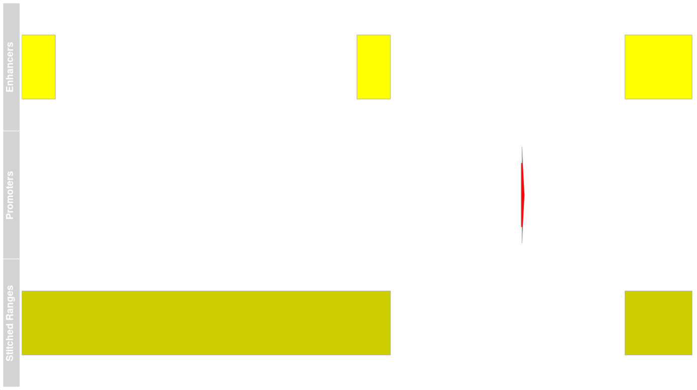

vignettes/range_based_functions.Rmd
range_based_functions.RmdThis package is designed to enable the Gene Regulatory Analysis using
Variable IP (GRAVI)
workflow, as a method for detecting differential binding in ChIP-Seq
datasets. As a workflow focussed on data integration, most functions
provided by the package extraChIPs are designed to enable
comparison across datasets. This vignette looks primarily at functions
which work with GenomicRanges objects.
In order to use the package extraChIPs and follow this
vignette, we recommend using the package BiocManager hosted
on CRAN. Once this is installed, the additional packages required for
this vignette (tidyverse, plyranges and
Gviz) can also be installed.
if (!"BiocManager" %in% rownames(installed.packages()))
install.packages("BiocManager")
BiocManager::install(c("tidyverse", "plyranges", "Gviz"))
BiocManager::install("extraChIPs")The advent of the tidyverse has led to
tibble objects becoming a common alternative to
data.frame or DataFrame objects. Simple
functions within extraChIP enable coercion from
GRanges, GInteractions and
DataFrame objects to tibble objects, with list columns
correctly handled. By default these coercion functions will coerce
GRanges elements to a character vector. Similarly,
GRanges represented as a character column can be coerced to
the ranges element of a GRanges object.
First let’s coerce from a tibble (or S3
data.frame) to a GRanges
library(tidyverse)
library(extraChIPs)
set.seed(73)
df <- tibble(
range = c("chr1:1-10:+", "chr1:5-10:+", "chr1:5-6:+"),
gene_id = "gene1",
tx_id = paste0("transcript", 1:3),
score = runif(3)
)
df## # A tibble: 3 × 4
## range gene_id tx_id score
## <chr> <chr> <chr> <dbl>
## 1 chr1:1-10:+ gene1 transcript1 0.442
## 2 chr1:5-10:+ gene1 transcript2 0.0831
## 3 chr1:5-6:+ gene1 transcript3 0.615
gr <- colToRanges(df, "range")
gr## GRanges object with 3 ranges and 3 metadata columns:
## seqnames ranges strand | gene_id tx_id score
## <Rle> <IRanges> <Rle> | <character> <character> <numeric>
## [1] chr1 1-10 + | gene1 transcript1 0.4423369
## [2] chr1 5-10 + | gene1 transcript2 0.0831099
## [3] chr1 5-6 + | gene1 transcript3 0.6146112
## -------
## seqinfo: 1 sequence from an unspecified genome; no seqlengthsCoercion back to a tibble will place the ranges as a
character column by default. However, this can be turned off and the
conventional coercion from as.data.frame will instead be
applied, internally wrapped in as_tibble()
as_tibble(gr)## # A tibble: 3 × 4
## range gene_id tx_id score
## <chr> <chr> <chr> <dbl>
## 1 chr1:1-10:+ gene1 transcript1 0.442
## 2 chr1:5-10:+ gene1 transcript2 0.0831
## 3 chr1:5-6:+ gene1 transcript3 0.615
as_tibble(gr, rangeAsChar = FALSE)## # A tibble: 3 × 8
## seqnames start end width strand gene_id tx_id score
## <fct> <int> <int> <int> <fct> <chr> <chr> <dbl>
## 1 chr1 1 10 10 + gene1 transcript1 0.442
## 2 chr1 5 10 6 + gene1 transcript2 0.0831
## 3 chr1 5 6 2 + gene1 transcript3 0.615A simple feature which may be useful for printing gene names using
rmarkdown is contained in collapseGenes().
Here a character vector of gene names is collapsed into a
glue object of length `, with gene names rendered in
italics by default.
gn <- c("Gene1", "Gene2", "Gene3")
collapseGenes(gn)Gene1, Gene2 and Gene3
mcols()
The standard set operations implemented in the package
GenomicRanges will always drop the mcols
element by default. The extraChIPs functions
reduceMC(), setdiffMC(),
intersectMC() and unionMC() all produce the
same output as their similarly-named functions, however, the
mcols() elements in the query object are also returned.
Where required, columns are coerced into CompressedList
columns. This can particularly useful when needed to propagate the
information contained in the initial ranges through to subsequent
analytic steps
GRanges objects
The classical approach to defining TSS regions for a set of
transcripts would be to use the function resize()`, setting
the width as 1.
tss <- resize(gr, width = 1)
tss## GRanges object with 3 ranges and 3 metadata columns:
## seqnames ranges strand | gene_id tx_id score
## <Rle> <IRanges> <Rle> | <character> <character> <numeric>
## [1] chr1 1 + | gene1 transcript1 0.4423369
## [2] chr1 5 + | gene1 transcript2 0.0831099
## [3] chr1 5 + | gene1 transcript3 0.6146112
## -------
## seqinfo: 1 sequence from an unspecified genome; no seqlengthsAs we can see, two transcripts start at position 5, so we may choose
to reduce this, which would lose the mcols element. The
alternative reduceMC() will retain all
mcols.
GenomicRanges::reduce(tss)## GRanges object with 2 ranges and 0 metadata columns:
## seqnames ranges strand
## <Rle> <IRanges> <Rle>
## [1] chr1 1 +
## [2] chr1 5 +
## -------
## seqinfo: 1 sequence from an unspecified genome; no seqlengths
reduceMC(tss)## GRanges object with 2 ranges and 3 metadata columns:
## seqnames ranges strand | gene_id tx_id
## <Rle> <IRanges> <Rle> | <character> <CharacterList>
## [1] chr1 1 + | gene1 transcript1
## [2] chr1 5 + | gene1 transcript2,transcript3
## score
## <NumericList>
## [1] 0.442337
## [2] 0.0831099,0.6146112
## -------
## seqinfo: 1 sequence from an unspecified genome; no seqlengthsBy default, this function will attempt to coerce mcols
to a new mcol of the appropriate type, however, when
multiple values are inevitable such as for the tx_id column
above, these will be coerced to a CompressedList. The
simplification of the multiple values seen in the gene_id
can also be turned off if desired should repeated values be important
for downstream analysis.
reduceMC(tss, simplify = FALSE) ## GRanges object with 2 ranges and 3 metadata columns:
## seqnames ranges strand | gene_id tx_id
## <Rle> <IRanges> <Rle> | <CharacterList> <CharacterList>
## [1] chr1 1 + | gene1 transcript1
## [2] chr1 5 + | gene1,gene1 transcript2,transcript3
## score
## <NumericList>
## [1] 0.442337
## [2] 0.0831099,0.6146112
## -------
## seqinfo: 1 sequence from an unspecified genome; no seqlengthsThis allows for simple integration with tidyverse
nesting strategies.
## # A tibble: 3 × 4
## range gene_id tx_id score
## <chr> <chr> <chr> <dbl>
## 1 chr1:1:+ gene1 transcript1 0.442
## 2 chr1:5:+ gene1 transcript2 0.0831
## 3 chr1:5:+ gene1 transcript3 0.615Whilst reduceMC relies on the range-reduction as
implemented in GenomicRanges::reduce(), some alternative
approaches are included, such as chopMC(), which finds
identical ranges and nests the mcols element as
CompressedList objects.
chopMC(tss)## GRanges object with 2 ranges and 3 metadata columns:
## seqnames ranges strand | gene_id tx_id
## <Rle> <IRanges> <Rle> | <character> <CharacterList>
## [1] chr1 1 + | gene1 transcript1
## [2] chr1 5 + | gene1 transcript2,transcript3
## score
## <NumericList>
## [1] 0.442337
## [2] 0.0831099,0.6146112
## -------
## seqinfo: 1 sequence from an unspecified genome; no seqlengthsIn the case of the object tss, this output is identical
to reduceMC(), however, given that there are no identical
ranges in gr the two functions would behave very
differently on that object.
A final operation for simplifying GRanges objects would
be distinctMC() which is a wrapper to
dplyr]::distinct incorporating both the range and
mcols. The columns to search can be called using
<data-masking> approaches as detailed in the
manual.
distinctMC(tss)## GRanges object with 2 ranges and 0 metadata columns:
## seqnames ranges strand
## <Rle> <IRanges> <Rle>
## [1] chr1 1 +
## [2] chr1 5 +
## -------
## seqinfo: 1 sequence from an unspecified genome; no seqlengths
distinctMC(tss, gene_id)## GRanges object with 2 ranges and 1 metadata column:
## seqnames ranges strand | gene_id
## <Rle> <IRanges> <Rle> | <character>
## [1] chr1 1 + | gene1
## [2] chr1 5 + | gene1
## -------
## seqinfo: 1 sequence from an unspecified genome; no seqlengthsGRanges Objects
Whilst reduce/reduceMC is applied to a single
GRanges object, the set operation functions
intersect, setdiff and union are
valuable approaches for comparing ranges. Using the *MC()
functions will retain mcols elements from the query
range.
peaks <- GRanges(c("chr1:1-5", "chr1:9-12:*"))
peaks$peak_id <- c("peak1", "peak2")
GenomicRanges::intersect(gr, peaks, ignore.strand = TRUE)## GRanges object with 2 ranges and 0 metadata columns:
## seqnames ranges strand
## <Rle> <IRanges> <Rle>
## [1] chr1 1-5 *
## [2] chr1 9-10 *
## -------
## seqinfo: 1 sequence from an unspecified genome; no seqlengths
intersectMC(gr, peaks, ignore.strand = TRUE)## GRanges object with 2 ranges and 3 metadata columns:
## seqnames ranges strand | gene_id
## <Rle> <IRanges> <Rle> | <character>
## [1] chr1 1-5 * | gene1
## [2] chr1 9-10 * | gene1
## tx_id score
## <CharacterList> <NumericList>
## [1] transcript1,transcript2,transcript3 0.4423369,0.0831099,0.6146112
## [2] transcript1,transcript2 0.4423369,0.0831099
## -------
## seqinfo: 1 sequence from an unspecified genome; no seqlengths
setdiffMC(gr, peaks, ignore.strand = TRUE)## GRanges object with 1 range and 3 metadata columns:
## seqnames ranges strand | gene_id
## <Rle> <IRanges> <Rle> | <character>
## [1] chr1 6-8 * | gene1
## tx_id score
## <CharacterList> <NumericList>
## [1] transcript1,transcript2,transcript3 0.4423369,0.0831099,0.6146112
## -------
## seqinfo: 1 sequence from an unspecified genome; no seqlengths
unionMC(gr, peaks, ignore.strand = TRUE)## GRanges object with 1 range and 3 metadata columns:
## seqnames ranges strand | gene_id
## <Rle> <IRanges> <Rle> | <character>
## [1] chr1 1-12 * | gene1
## tx_id score
## <CharacterList> <NumericList>
## [1] transcript1,transcript2,transcript3 0.4423369,0.0831099,0.6146112
## -------
## seqinfo: 1 sequence from an unspecified genome; no seqlengthsThere is a performance overhead to preparation of mcols as
CompressedList objects and all mcols in the
query object will be returned. If only wishing to retain a subset of
mcols, these should be selected prior to passing to these
functions.
library(plyranges)
gr %>%
select(tx_id) %>%
intersectMC(peaks, ignore.strand = TRUE)## GRanges object with 2 ranges and 1 metadata column:
## seqnames ranges strand | tx_id
## <Rle> <IRanges> <Rle> | <CharacterList>
## [1] chr1 1-5 * | transcript1,transcript2,transcript3
## [2] chr1 9-10 * | transcript1,transcript2
## -------
## seqinfo: 1 sequence from an unspecified genome; no seqlengthsWhilst the functions findOverlaps() and
overlapsAny() are extremely useful, the addition of
propOverlap() returns a numeric vector with the proportion
of each query range (x) which overlaps any range in the
subject range (y)
propOverlap(gr, peaks)## [1] 0.7 0.5 0.5This is also extended to enable comparison across multiple features and to classify each peak by which features that it overlaps the most strongly.
bestOverlap(gr, peaks, var = "peak_id")## [1] "peak1" "peak2" "peak1"In addition to standard set operations, one set of ranges can be used
to partition another set of ranges, returning mcols from
both ranges. Ranges from the query range (x) are returned
after being partitioned by the ranges in the subject range
(y). Subject ranges used for partitioning must be
non-overlapping, and if overlapping ranges are provided, these will
be reduced prior to partitioning.
This enables the identification of specific ranges from the query
range (x) which overlap ranges from the subject range
(y) Under this approach, mcols from both
query and subject ranges will be returned to
enable the clear ranges which are common and distinct within the two
sets of ranges.
partitionRanges(gr, peaks)## GRanges object with 5 ranges and 4 metadata columns:
## seqnames ranges strand | peak_id gene_id
## <Rle> <IRanges> <Rle> | <character> <character>
## [1] chr1 1-5 + | peak1 gene1
## [2] chr1 5 + | peak1 gene1
## [3] chr1 6 + | <NA> gene1
## [4] chr1 6-8 + | <NA> gene1
## [5] chr1 9-10 + | peak2 gene1
## tx_id score
## <CharacterList> <NumericList>
## [1] transcript1 0.442337
## [2] transcript2,transcript3 0.0831099,0.6146112
## [3] transcript3 0.614611
## [4] transcript1,transcript2 0.4423369,0.0831099
## [5] transcript1,transcript2 0.4423369,0.0831099
## -------
## seqinfo: 1 sequence from an unspecified genome; no seqlengthsWhilst this shares some similarity with intersectMC()
the additional capabilities provide greater flexibility.
partitionRanges(gr, peaks) %>%
subset(is.na(peak_id))## GRanges object with 2 ranges and 4 metadata columns:
## seqnames ranges strand | peak_id gene_id
## <Rle> <IRanges> <Rle> | <character> <character>
## [1] chr1 6 + | <NA> gene1
## [2] chr1 6-8 + | <NA> gene1
## tx_id score
## <CharacterList> <NumericList>
## [1] transcript3 0.614611
## [2] transcript1,transcript2 0.4423369,0.0831099
## -------
## seqinfo: 1 sequence from an unspecified genome; no seqlengthsUsing the function stitchRanges() we are able to join
together sets of nearby ranges, but with the option of placing clear
barriers between ranges, across which ranges cannot be joined. This may
be useful if joining enhancers to form putative super-enhancers, but
explicitly omitting defined promoter regions.
enh <- GRanges(c("chr1:1-10", "chr1:101-110", "chr1:181-200"))
prom <- GRanges("chr1:150:+")
se <- stitchRanges(enh, exclude = prom, maxgap = 100)
se## GRanges object with 2 ranges and 0 metadata columns:
## seqnames ranges strand
## <Rle> <IRanges> <Rle>
## [1] chr1 1-110 *
## [2] chr1 181-200 *
## -------
## seqinfo: 1 sequence from an unspecified genome; no seqlengthsAs a visualisation (below) ranges within 100bp were stitched together, however the region defined as a ‘promoter’ acted as a barrier and ranges were not stitched together across this barrier.

## R Under development (unstable) (2022-03-14 r81896)
## Platform: x86_64-pc-linux-gnu (64-bit)
## Running under: Ubuntu 20.04.4 LTS
##
## Matrix products: default
## BLAS/LAPACK: /usr/lib/x86_64-linux-gnu/openblas-pthread/libopenblasp-r0.3.8.so
##
## locale:
## [1] LC_CTYPE=en_US.UTF-8 LC_NUMERIC=C
## [3] LC_TIME=en_US.UTF-8 LC_COLLATE=en_US.UTF-8
## [5] LC_MONETARY=en_US.UTF-8 LC_MESSAGES=en_US.UTF-8
## [7] LC_PAPER=en_US.UTF-8 LC_NAME=C
## [9] LC_ADDRESS=C LC_TELEPHONE=C
## [11] LC_MEASUREMENT=en_US.UTF-8 LC_IDENTIFICATION=C
##
## attached base packages:
## [1] stats4 stats graphics grDevices utils datasets methods
## [8] base
##
## other attached packages:
## [1] plyranges_1.15.0 extraChIPs_0.99.6
## [3] SummarizedExperiment_1.25.3 Biobase_2.55.2
## [5] MatrixGenerics_1.7.0 matrixStats_0.61.0
## [7] GenomicRanges_1.47.6 GenomeInfoDb_1.31.7
## [9] IRanges_2.29.1 S4Vectors_0.33.17
## [11] BiocGenerics_0.41.2 BiocParallel_1.29.20
## [13] forcats_0.5.1 stringr_1.4.0
## [15] dplyr_1.0.8 purrr_0.3.4
## [17] readr_2.1.2 tidyr_1.2.0
## [19] tibble_3.1.6 ggplot2_3.3.5
## [21] tidyverse_1.3.1 BiocStyle_2.23.1
##
## loaded via a namespace (and not attached):
## [1] utf8_1.2.2 tidyselect_1.1.2
## [3] RSQLite_2.2.12 AnnotationDbi_1.57.1
## [5] htmlwidgets_1.5.4 grid_4.2.0
## [7] scatterpie_0.1.7 munsell_0.5.0
## [9] codetools_0.2-18 ragg_1.2.2
## [11] withr_2.5.0 colorspace_2.0-3
## [13] filelock_1.0.2 highr_0.9
## [15] knitr_1.38 rstudioapi_0.13
## [17] ggside_0.2.0 GenomeInfoDbData_1.2.8
## [19] polyclip_1.10-0 farver_2.1.0
## [21] bit64_4.0.5 rprojroot_2.0.3
## [23] vctrs_0.4.1 generics_0.1.2
## [25] xfun_0.30 biovizBase_1.43.1
## [27] csaw_1.29.1 BiocFileCache_2.3.4
## [29] R6_2.5.1 doParallel_1.0.17
## [31] clue_0.3-60 locfit_1.5-9.5
## [33] AnnotationFilter_1.19.0 bitops_1.0-7
## [35] cachem_1.0.6 DelayedArray_0.21.2
## [37] assertthat_0.2.1 BiocIO_1.5.0
## [39] scales_1.2.0 nnet_7.3-17
## [41] gtable_0.3.0 ensembldb_2.19.10
## [43] rlang_1.0.2 systemfonts_1.0.4
## [45] GlobalOptions_0.1.2 splines_4.2.0
## [47] rtracklayer_1.55.4 lazyeval_0.2.2
## [49] dichromat_2.0-0 broom_0.8.0
## [51] checkmate_2.0.0 BiocManager_1.30.16
## [53] yaml_2.3.5 modelr_0.1.8
## [55] GenomicFeatures_1.47.13 backports_1.4.1
## [57] Hmisc_4.6-0 EnrichedHeatmap_1.25.2
## [59] tools_4.2.0 bookdown_0.26
## [61] ellipsis_0.3.2 jquerylib_0.1.4
## [63] RColorBrewer_1.1-3 Rcpp_1.0.8.3
## [65] base64enc_0.1-3 progress_1.2.2
## [67] zlibbioc_1.41.0 RCurl_1.98-1.6
## [69] prettyunits_1.1.1 rpart_4.1.16
## [71] GetoptLong_1.0.5 haven_2.4.3
## [73] ggrepel_0.9.1 cluster_2.1.3
## [75] fs_1.5.2 magrittr_2.0.3
## [77] data.table_1.14.2 circlize_0.4.14
## [79] reprex_2.0.1 ProtGenerics_1.27.2
## [81] hms_1.1.1 evaluate_0.15
## [83] XML_3.99-0.9 jpeg_0.1-9
## [85] readxl_1.4.0 gridExtra_2.3
## [87] shape_1.4.6 compiler_4.2.0
## [89] biomaRt_2.51.3 crayon_1.5.1
## [91] htmltools_0.5.2 ggfun_0.0.6
## [93] tzdb_0.3.0 Formula_1.2-4
## [95] lubridate_1.8.0 DBI_1.1.2
## [97] tweenr_1.0.2 dbplyr_2.1.1
## [99] ComplexHeatmap_2.11.1 MASS_7.3-56
## [101] GenomicInteractions_1.29.5 rappdirs_0.3.3
## [103] Matrix_1.4-1 cli_3.2.0
## [105] parallel_4.2.0 Gviz_1.39.6
## [107] metapod_1.3.0 igraph_1.3.0
## [109] pkgconfig_2.0.3 pkgdown_2.0.2.9000
## [111] GenomicAlignments_1.31.2 foreign_0.8-82
## [113] xml2_1.3.3 InteractionSet_1.23.1
## [115] foreach_1.5.2 bslib_0.3.1
## [117] XVector_0.35.0 rvest_1.0.2
## [119] VariantAnnotation_1.41.3 digest_0.6.29
## [121] Biostrings_2.63.3 rmarkdown_2.13
## [123] cellranger_1.1.0 htmlTable_2.4.0
## [125] edgeR_3.37.1 restfulr_0.0.13
## [127] curl_4.3.2 Rsamtools_2.11.0
## [129] rjson_0.2.21 lifecycle_1.0.1
## [131] jsonlite_1.8.0 desc_1.4.1
## [133] limma_3.51.7 BSgenome_1.63.6
## [135] fansi_1.0.3 pillar_1.7.0
## [137] lattice_0.20-45 KEGGREST_1.35.0
## [139] fastmap_1.1.0 httr_1.4.2
## [141] survival_3.3-1 glue_1.6.2
## [143] png_0.1-7 iterators_1.0.14
## [145] bit_4.0.4 ggforce_0.3.3
## [147] stringi_1.7.6 sass_0.4.1
## [149] blob_1.2.3 textshaping_0.3.6
## [151] latticeExtra_0.6-29 memoise_2.0.1